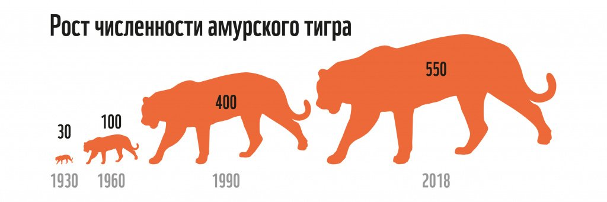

Уссурийские тигры по образу жизни — одиночки. Самец встречается с самкой на пару дней, в воспитании тигрят не участвует, а самка по достижению половой зрелости потомства тоже живет своей жизнью. Амурские тигры даже на охоту выходят поодиночке, хотя так сложнее добывать пищу.
Амурские тигры живут годами на одной территории, если вокруг достаточно пищи. И только фактор ее отсутствия может заставить их совершить переход на другое место. Территория закрепляется за тигром пахучими метками, проскрёбами в земле и задирами на деревьях. Так чужаки если и решат зайти на его территорию, то только из-за наглого поведения — тогда произойдет драка.
Амурский тигр охотится, обходя свою территорию. Он видит жертву, подползает ближе к ней, выгибает спину и дает упор задними лапами в землю. Если удается остаться незамеченным, после прыжка хищник забирает трофей, но по статистике успешная только одна и десяти попыток.